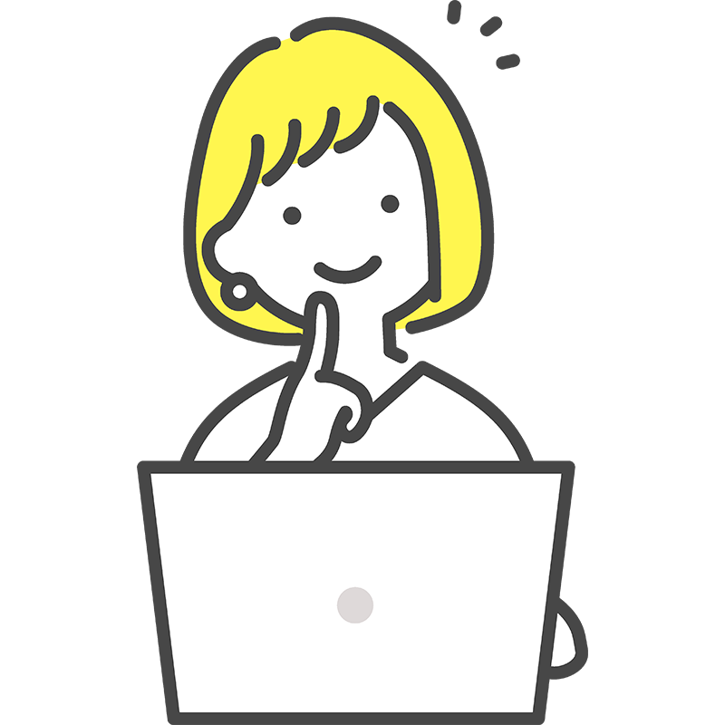
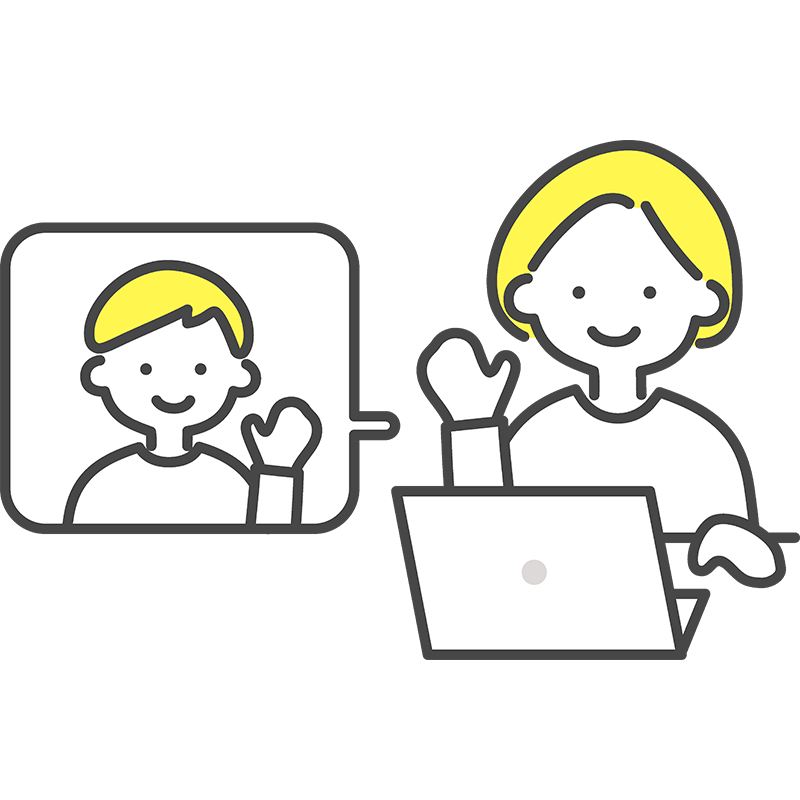

1
eラーニング

manabyのeラーニングコンテンツはすべて独自に開発。たくさんの動画コンテンツの中から自分に合うものを選び、自分のペースで学んでいきます。
2
面談

manabyではダイアローグ(対話)を大切にしています。支援員との面談を通して「自分らしさ」や「自分らしい働き方」について考えを深めていきます。
3
グループワーク

生活リズムを整えるセルフケア勉強会コミュニケーション力向上のためのゲームや茶話会、ビジネスマナーや最新動向を学ぶ講座などを定期的に開催。参加は自由です。
4
就職支援
情報収集から履歴書の作成、また面接練習などを支援員のサポートを受けながら進めます。支援員が面接同行や企業との連絡代行をすることもあります。